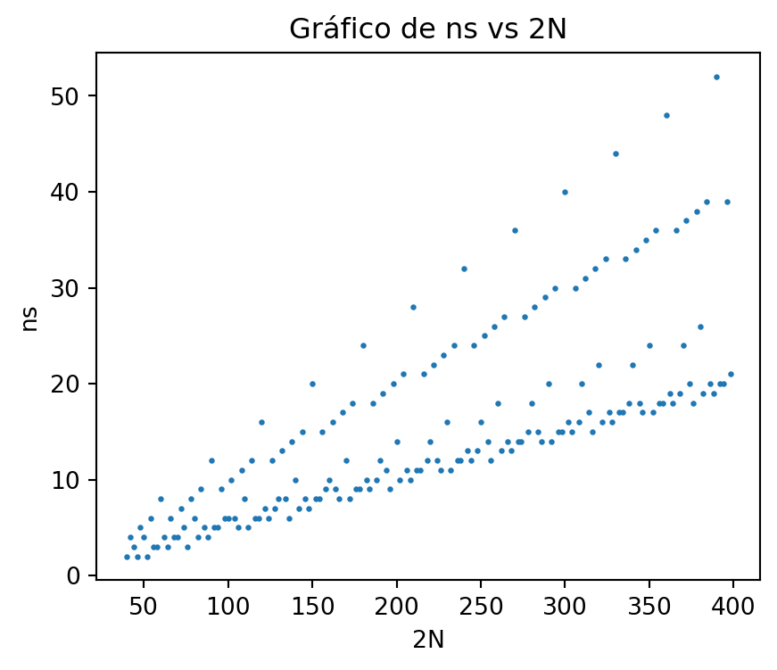

La matemática es un lenguaje que permite describir de forma cuantitativa y cualitativa nuestro entorno. Este lenguaje que se construye a partir de la sintaxis de la lógica, cruza barreras idiológicas, económicas, étnicas, de género y cualquir otra cimentada por el humano.
Solución de \(5s + r \equiv a \mod p\)
Vamos a encontrar un conjunto de valores enteros \(s\) tales que
\[
5s + r \equiv a \mod p
\tag{1}\]
siendo \(p\) un número primo y \(r - a \not\equiv 0 \mod p\). Con este propósito consideremos el cambio de variable \(s = w + \tau(w)\) y reescribamos la ecuación 1 en la forma
\[
5(w + \tau(w)) = p w + a,
\]
Note que
\[
5 \tau(w) = (p - 5) w + a - r.
\tag{2}\]
Aquí es razonable desear que la expresión \((p - 5) w + a - r\) sea un múltiplo de \(5\), es decir
\[
(p - 5) w + a - r = 5m,
\]
o de forma equivalente \[
(p - 5)w = 5m + r - a,
\]
para un cierto entero \(m\).
Si asumimos que \(m = z(r-a)\) entonces
\[
(p-5)w = (r-a) (1 + 5z).
\tag{3}\]
y ya que \(p - 5\) y \(5\) son primos relativos se sigue del pequeño Teorema de Fermat que \((p -5)^{4} \equiv 1 \mod 5\), esto quiere decir que existe un entero \(z\) tal que \(1 + 5z = (p-5)^4\) y de acuerdo con esto 3 se puede escribir como
En el siguiente programa se realiza la grafica \(\mod(g(p), p)\) para los primos \(p\) desde \(7\) hasta \(200\)
import numpy as npimport matplotlib.pyplot as pltdef testp(n): d =int(np.sqrt(n)) i =2while (i <= d):if (n % i ==0):return0else: i = i +1return1lp = np.array([k for k inrange(7,200) if testp(k) ==1])def g(p):return ((p*(p -5)**3-1)/5)%pplt.figure(figsize = (5,4))plt.scatter(lp, [g(k) for k in lp], s =3)plt.title('Gráfico de g(p) vs p')plt.xlabel('p (primo)')plt.ylabel('g(p)')plt.show()
Ejemplo 1 Encuentre el conjunto solución de la ecuación \[
5s + 3 \equiv 44 \mod 53.
\]
Aquí \(r = 3\) y \(a = 44\). De acuerdo con esto al reemplazar \(p\) por \(53\) en 5 obtenemos que
\[
s \equiv 40 \mod 53.
\]
Número de soluciones
Para un entero \(k\) no negativo es conocido que el número de soluciones enteras no negativas del problema \[
x_1 + x_2 + \cdots + x_n = k,
\tag{6}\]
es \(\displaystyle \binom{k + n - 1}{n - 1}.\) En esta sección en queremos encontrar el número de soluciones del problema
\[
s + r_1 + t + r_2 = k,
\tag{7}\]
con el supuesto de que
\[
s + t = n
\tag{8}\]
\[
r_1 + r_2 = r
\tag{9}\]
Aquí \(n + r = k.\)
De acuerdo con 6 el número de soluciones enteras no negativas de 8 y 9 son respectivamente \(n + 1\) y \(r + 1\). Se sigue entonces de la ley del producto, el número de soluciones \(n_S\) de 7 con las restricciones 8 y 9 son
\[
n_S = (n + 1)(r + 1)
\tag{10}\]
Supongamos que en adición a las restricciones 8 y 9 solicitamos que las variales \(r_1\) y \(r_2\) verifiquen que \(r_1, r_2 \leq z\), aquí \(z < r\). En este caso vamos a encontrar el número de soluciones del problema
\[
w + r_2 = r
\tag{11}\]
con \(w > z.\) Con este propósito en mente hacemos la sustitución \(u = w - z - 1\) con lo que
\[
u + r_2 = r - z - 1 \text{ aquí } u, r_2 \geq 0,
\]
esto quiere decir que el número de soluciones del problema 11 son \(n_S = z + 1.\) De acuerdo con esto el número de soluciones \(r_1 + r_2 = r\) con la restricción \(r_1 \leq z\) son \(n_S = r + 1 - (z + 1) = r - z\)
Repitiendo el mismo proceso para \(r_2\) y restando las soluciones de \(r + 1\) obtenemos que el número de soluciones del problema
\[
r_1 + r_2 = r \text{ con } r_1,r_2 \leq z
\]
son \(n_S = 2z - r + 1.\)
En el caso de que se quiera incluir una restricción de la forma \(r_1 \neq z_0\) y \(r_2 \neq z'_0\). Entonces eliminamos dos soluciones si \(z_0 + z'_0 \neq r\) y tres si \(z_0 + z'_0 = r\). El análisis anterior se resume en el siguiente resultado.
Lema 1 Sean \(n\) y \(r\) enteros no negativos, tales que \(n + r = k.\) El número de soluciones \(n_S\) del problema
\[
s + r_1 + t + r_2 = k
\tag{12}\]
con:
A1\[
s + t = n \quad \text{ y } \quad r_1 + r_2 = r
\]
son: \(n_S = (n + 1)(r + 1).\)
A2\[
s + t = n \quad \text{ y } \quad r_1 + r_2 = r \text{ para } r_1,r_2 \leq z < r
\]
son: \(n_S = (n + 1)(2z - r + 1).\)
A3\[
s + t = n \quad \text{ y } \quad r_1 + r_2 = r \text{ para } r_1 \neq z_0 \text{ y } r_2 \neq z'_0
\]
son: \(n_S = (n + 1)(r - 1)\)
Un caso de simetría
Definición 1 Diremos que dos soluciones \(s,\)\(r_1,\)\(t,\)\(r_2\) y \(s',\)\(r'_1,\)\(t',\)\(r'_2\) del problema 12 son simétricas si \(s = t',\)\(r_1 = r'_2\), \(t = s'\) y \(r_2 = r'_1\).
A lo largo de nuestras discusiones emplearemos la siguiente función
\[
\Omega(n) =
\begin{cases}
\dfrac{n}{2} & \text{ si } n \text{ es par,}
\\
\\
\Big\lfloor \dfrac{n}{2} \Big\rfloor + 1 & \text{ si } n \text{ es impar.}
\end{cases}
\tag{13}\]
Múltiplos de primos
Todo número par \(2N\) es de la forma \[
2N \equiv 0 \mod 6, \quad 2N \equiv 2 \mod 6, \quad \text{ ó } \quad 2N \equiv 4 \mod 6,
\]
y como \(0\), \(2\) y \(4\) se obtienen en \(\mathbb{Z}_6\) a partir de la suma de \(1\) y/o \(5\), \((1 + 5 = 0\), \(1 + 1 = 2\), \(5 + 5 = 4)\), entonces todo par \(2N,\) y en particular \(2N\) no negativo, se puede escribir como la suma de dos elementos pertenecientes a los conjuntos \[
A = \{ 6x + 1 \}_{x \in \mathbb{N}_0} \text{ y } B = \{ 6y + 5 \}_{y \in \mathbb{N}_0}.
\tag{14}\]
y ya que los elementos de \(A\) y \(B\) no son divisibles por \(2\) ni por \(3\) entonces:
Lema 2 Todo número par \(2N \geq 6\) se puede escribir como la suma de dos números no divisibles por \(2\) ni por \(3.\)
En los conjuntos 14 siempre es posible encontrar, para ciertos valores de \(x\) e \(y\), múltiplos de algún primo \(p\). En este caso, \(x\) e \(y\) deben de satisfacer las siguientes ecuaciones modulares \[
6x \equiv (p - 1) \mod{p},
\]\[
6y \equiv (p - 5) \mod{p},
\]
cuya solución se obtiene considerando si \(p-1\) es un múltiplo de \(6\), o si \(p-5\) es un múltiplo de \(6\).
S1. Si \(p-1\) es divisible por \(6,\) entonces \[
x \equiv a \mod{p} \quad \text{ con } \quad a = \frac{p-1}{6}
\tag{15}\] y \[
y \equiv b \mod{p} \quad \text{ con } \quad b = 5a
\tag{16}\]
S2. Si \(p-5\) es divisible por \(6,\) entonces \[
y \equiv b \mod{p} \quad \text{ con } \quad b = \frac{p-5}{6}
\tag{17}\] y \[
x \equiv a \mod{p} \quad \text{ con } a = \frac{5p - 1}{6}
\tag{18}\]
En ambas situaciones S1. y S2. es claro que \(a + b = p-1\)
Ejemplo 2 Para \(p = 31\) (situación S1.) tenemos que \(a = 5\) y \(b = 25.\) De acuerdo con esto los elementos de los conjuntos 14 tomando \(x \equiv 5 \mod{31}\) y \(y \equiv 25 \mod{31}\) son todos múltiplos de \(31\) no divisibles por \(2\) ni por \(3.\) Por ejemplo, si \(x = 1245\) y \(y = 366\) obtenemos en \(A\) y \(B\) respectivamente los números \(7471\) y \(2201\) ambos divisibles por \(31\).
Ejemplo 3 Para \(p = 29\) (situación S2.) tenemos que \(b = 4\) y \(a = 24.\) De acuerdo con esto los elementos de los conjuntos 14 tomando \(y \equiv 4 \mod{29}\) y \(x \equiv 24 \mod{29}\) son todos múltiplos de \(29\) no divisibles por \(2\) ni por \(3.\) Por ejemplo, si \(x = 691\) y \(y = 903\) obtenemos en \(A\) y \(B\) respectivamente los números \(4147\) y \(5423\) ambos divisibles por \(29\).
Evitando múltiplos de primos
Sean \(\alpha\) y \(\beta\) dos números múltiplos de un primo \(p\), pertenecientes a cualquiera o ambos conjuntos \(A\) y \(B.\) Es claro que \(\alpha + \beta = 2N\) es un número par.
Nuestro propósito ahora es encontrar una forma de reescribir la suma \(\alpha + \beta\) por otra \(\alpha' + \beta'\) en donde \(\alpha'\) y \(\beta'\) sean elementos de \(A\) y \(B,\) no múltiplos de \(p\) y cuya suma sea igualmente \(2N.\)
Estudiaremos dos casos posibles, uno cuando queremos evitar múltiplos de un mismo primo en el conjunto \(A\) y otro caso en donde queremos esquivar múltiplos de un mismo primo en el conjunto \(B\).
C1 Sean \(\alpha\) y \(\beta\) elementos del conjunto \(A,\) véase ecuación 14, ambos múltiplos de un primo \(p\) siendo \(p-1\) un múltiplo de \(6.\) Es claro que \[
\begin{align*}
2N & = \alpha + \beta
\\
& = 6(x_1 + x_2) + 2
\end{align*}
\] en donde \(x_1 , x_2 \equiv a \mod{p},\) con \(a\) como en 15. Ahora bien, una de las tantas formas de escribir \(a\) como un elemento de \(\mathbb{Z}_p\) es por ejemplo \[
a = 6a + (a + 1) \text{ con } 6a, a, 1 \in \mathbb{Z}_p.
\] y en este caso \[
2a = p - 2 + (2a + 2).
\] Si tomamos \[
\begin{align*}
& x_1' = (p-2) \mod p
\\
& x_2' = (2a + 2) \mod p
\end{align*}
\tag{19}\] entonces nuestros nuevos candidatos para \(\alpha'\) y \(\beta'\) serían \[
\alpha' = 6x_1' + 1 \quad \text{ y } \quad \beta' = 6x_2' + 1
\]
Ejemplo 4 Considere los números \(\alpha = 247\) y \(\beta = 589\) ambos son elementos del conjunto \(A\) y múltiplos de \(p = 19\). En este caso \(a = 3\) y de acuerdo con 19 obtenemos \[
x_1' \equiv 17 \mod{19} \quad \text{ y } \quad x_2' \equiv 8 \mod{19}
\] De acuerdo con esto, si
siendo \(s\) y \(t\) números enteros no negativos, nos permite escribir \(836\) como la suma de dos números no divibles por \(2\), \(3\) y \(19\). En efecto, al reducir 20 obtenemos \[
s + t = 6
\] y las combinaciones \((0,6),\)\((1,5),\)\((2,4),\)\((3,3),\)\((4,2),\)\((5,1)\) y \((6,0)\) de la pareja \((s, t)\) al reemplazarse en 20 permiten escribir el número \(836\) en las formas \[
\begin{align*}
& 836 = 103 + 733 = 217 + 619 = 331 + 505
\\
& 836 = 445 + 391 = 559 + 277 = 673 + 163 = 787 + 49,
\end{align*}
\] aquí todos estos sumandos no son divisibles por \(2\), \(3\) y \(19\).
C2 Sean \(\alpha\) y \(\beta\) elementos del conjunto \(B\) ambos múltiplos de un primo \(p\) siendo \(p-5\) múltiplo de \(6.\) Es claro que \[
\begin{align*}
2N & = \alpha + \beta
\\
& = 6(y_1 + y_2) + 2
\end{align*}
\] en donde \(y_1 , y_2 \equiv b \mod{p},\) con \(b\) como 17. Una de las tantas formas de escribir \(b\) como un elemento de \(\mathbb{Z}_p\) es por ejemplo \[
b = 2b + (p-b) \text{ para } 2b, p-b \in \mathbb{Z}_p.
\] y en este caso \[
2b = 4b + (p - 2b)
\] Si tomamos \[
\begin{align*}
& y_1' = 4b \mod p
\\
& y_2' = (p - 2b) \mod p
\end{align*}
\tag{21}\] entonces nuestros candidatos para \(\alpha'\) y \(\beta'\) serían \[
\alpha' = 6y_1' + 5 \quad \text{ y } \quad \beta' = 6y_2' + 5
\]
Ejemplo 5 Considere los números \(\alpha = 893\) y \(\beta = 2021\) ambos elementos del conjunto \(B\) múltiplos de \(p = 47\). En este caso \(b = 7\) de acuerdo con 21 obtenemos
siendo \(s\) y \(t\) números enteros no negativos, nos permite escribir \(2914\) como la suma de dos números no divibles por \(2\), \(3\) y \(47\). En efecto, al reducir 22 obtenemos \[
s + t = 9
\] y las combinaciones \((0,9),\)\((1,8),\)\((2,7),\)\((3,6),\)\((4,5),\)\((5,4)\), \((6,3)\), \((7, 2)\), \((8, 1)\) y \((9,0)\) de la pareja \((s, t)\) al reemplazarse en 22 permiten escribir el número \(2914\) en las formas
Empleando las técnicas vistas en la sección anterior podemos determinar de cuántas formas es posible escribir un número par sin emplear múltiplos de \(2\), \(3\) y \(5\).
Par \(2N\) con \(N \equiv 1 \mod 3\)
Si \(2N\) es un número par tal que \(N \equiv 1 \mod 3\) entonces es claro que \(2N\) se puede escribir como la suma de dos enteros \(\alpha_1\) y \(\alpha_2\) ambos pertenecientes al conjunto \(A\).
Supongamos que \(\alpha_1 = 6x_1 + 1\) con \(x_1 \equiv r_1 \mod 5\) y que \(\alpha_2 = 6x_2 + 1\) con \(x_2 \equiv r_2 \mod 5\).
siendo \(s\), \(t\) son enteros positivos. Al reducir esta última expresión obtenemos
\[
s + t = \frac{m - (r_1 + r_2)}{5}
\tag{24}\]
en donde \(m\) es un entero tal que \(N = 3m + 1\), \(m \geq 2\).
Debido a la simetría de la expresión 23 el número de parejas cuya suma es \(2N\) son:
En el caso en que \(j \equiv 0 \mod 5\), debido a que \(r_1 + r_2 = 0\) o \(r_1 + r_2 = 5\) con \(r_1 , r_2 \leq 3,\) el número de parejas son: \[
n_S = \Omega\left( \dfrac{m + 5}{5} \right) + \Omega\left( \dfrac{2m}{5} \right).
\]
En el caso en que \(j \equiv 1 \mod 5\), debido a que \(r_1 + r_2 = 1\) o \(r_1 + r_2 = 6\) con \(r_1 , r_2 \leq 3,\) el número de parejas son:
Si \(2N\) es un número par tal que \(N \equiv 2 \mod 3\) entonces es claro que \(2N\) se puede escribir como la suma de dos enteros \(\beta_1\) y \(\beta_2\) ambos pertenecientes al conjunto \(B\).
Supongamos que \(\beta_1 = 6y_1 + 5\) con \(y_1 \equiv r_1 \mod 5\) y que \(\beta_2 = 6y_2 + 5\) con \(y_2 \equiv r_2 \mod 5\).
Si \(j \equiv 3 \mod 5\), debido a que \(r_1 + r_2 = 2\) con \(r_1, r_2 \neq 0\) y \(r_1 + r_2 = 7\), con \(r_1, r_2 \neq 0\) y \(r_1, r_2 \leq 4\), entonces el número de parejas son:
Si \(j \equiv 4 \mod 5\), debido a que \(r_1 + r_2 = 3\) con \(r_1, r_2 \neq 0\) y \(r_1 + r_2 = 8\) con \(r_1, r_2 \neq 0\) y \(r_1, r_2 \leq 4\), con entonces el número de parejas son:
Si \(2N\) es un número par tal que \(N \equiv 0 \mod 3\) entonces es claro que \(2N\) se puede escribir como la suma de dos enteros \(\alpha\) y \(\beta\) ambos pertenecientes a los conjunto \(A\) y \(B\) respectivamente.
Supongamos que \(\alpha = 6x + 1\) con \(x \equiv r_1 \mod 5\) y que \(\beta = 6y + 5\) con \(y \equiv r_2 \mod 5\).
siendo \(s\), \(t\) enteros positivos. Al reducir esta última expresión obtenemos
\[
s + t = \frac{m - (r_1 + r_2 + 1)}{5}
\tag{29}\]
Nuestro razonamiento ahora será de forma similiar a los casos anteriores, teniendo en cuenta que los términos \(\alpha\) y \(\beta\) pertenecen a conjuntos distintos, esto quiere decir que no tenemos simetría en las soluciones. De acuerdo con esto
Si \(j = 0\) entonces \(r_1 + r_2 = 4\) con \(r_1 \neq 4\) y \(r_2 \neq 0\). De acuerdo con esto
\[
n_S = \frac{4m}{5}.
\]
Si \(j = 1\) los valores que pueden tomar \(r_1\), \(r_2\) son \(r_1 = 1\) y \(r_2 = 4\), \(r_1 = 2,3\) y \(r_2 = 3,2\). De acuerdo con esto
\[
n_S = \frac{3m - 3}{5}.
\]
Si \(j = 2\) los valores que pueden tomar \(r_1\), \(r_2\) son \(r_1 = 0\) y \(r_2 = 1\), \(r_1 = 2\) y \(r_2 = 4\), \(r_1 = 3\) y \(r_2 = 3\). De acuerdo con esto
\[
n_S = \frac{3m - 1}{5}.
\]
Si \(j = 3\) los valores que pueden tomar \(r_1\), \(r_2\) son \(r_1 = 0\) y \(r_2 = 2\), \(r_1 = 1\) y \(r_2 = 1\), \(r_1 = 3\) y \(r_2 = 4\). De acuerdo con esto
\[
n_S = \frac{3m + 1}{5}.
\]
Si \(j = 4\) los valores que pueden tomar \(r_1\), \(r_2\) son \(r_1 = 0\) y \(r_2 = 3\), \(r_1 = 1,2\) y \(r_2 = 2,1\). De acuerdo con esto
\[
n_S = \frac{3m + 3}{5}.
\]
El siguiente programa encuentra el número de parejas no divisibles por \(2\), \(3\) ni \(5\) cuya suma en un número par \(2N\).
import numpy as npimport matplotlib.pyplot as plt"""La función pr(n) devuelve el valor de 1 si n en un número nodivisible por 2,3 y 5. De lo contrario devuelve el valor de 0."""def pr(x): a = [2,3,5] i =0while (i <=2): cociente = x//a[i]if (x==cociente*a[i]): i =4else: i = i +1if (i >3):return0else:return1"""La función ng(n) calcula el número de parejas de números no divisibles por 2, 3, y 5 cuya suma es 2N."""def ng(x): lg = [] par_mitad =int(x/2)for i inrange(1, par_mitad+1):if pr(i) ==1and pr(x - i) ==1: lg.append([i, x - i])returnlen(lg)"""Funciones para calcular el número de parejas no divisibles por 2, 3 y 5 cuya suma es 2N."""def f(x):if x %2==0:return x/2else:return np.floor(x/2) +1# En la caso en que N = 1 mod 3def nsa(x): m = (x -2)/6if m%5==0:return f((m +5)/5) + f(2*m/5)if m%5==1:return f((2*m +8)/5) + f((m-1)/5)if m %5==2:return f((3*m +9)/5)if m %5==3:return f((4*m +8)/5)if m%5==4:return f( (3*m +3)/5 )# En la caso en que N = 2 mod 3def nsb(x): m = (x -4)/6if m%5==0:return f((3*m)/5)if m%5==1:return f((4*m -4 )/5)if m%5==2:return f((3*m -9 )/5)if m%5==3:return f(m/5) + f((2*m -10 )/5)if m%5==4:return f((2*m -4 )/5) + f((m -7 )/5)# En la caso en que N = 0 mod 3def nsc(x): m = x/6if m%5==0:return4*m/5if m%5==1:return (3*m -3)/5if m%5==2:return (3*m -1)/5if m%5==3:return (3*m +1)/5if m%5==4:return (3*m +3)/5# Definición de la funcion ns (números de parejas# cuya suma es 2N)def ns(x):if (x/2)%3==1:return nsa(x)if (x/2)%3==2:return nsb(x)if (x/2)%3==0:return nsc(x)valores = [2*k for k inrange(20,250)]plt.figure(figsize = (5,4))plt.scatter(valores, [ns(k) for k in valores], s =2)plt.title('Gráfico de ns vs 2N')plt.xlabel('2N')plt.ylabel('ns')plt.show()"""Un ejemplo numérico y analíticomodifique el valor de k"""print('El siguiente es un ejemplo numérico ')numero =99602042print(f'Número par {numero}')print(f'Cómputo numérico del número de parejas {ng(numero)}')print(f'Expresión analítica para calcular el número de parejas {ns(numero)}')

El siguiente es un ejemplo numérico
Número par 99602042
Cómputo numérico del número de parejas 4980103
Expresión analítica para calcular el número de parejas 4980103.0